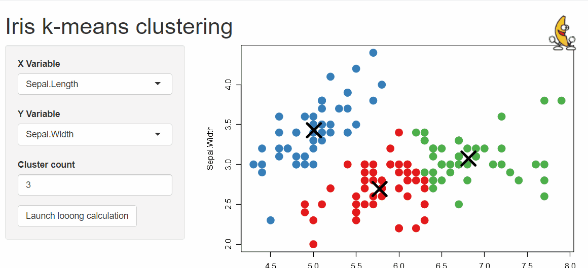

Automated (or not) busy indicator for Shiny apps & other progress / notifications tools
Installation
Install from CRAN with:
install.packages("shinybusy")You can install dev version of shinybusy from GitHub:
remotes::install_github("dreamRs/shinybusy")Examples
Automated busy indicators
Gif
Animate a Gif when server is busy and pause animation when server is idle :
# Somewhere in UI
add_busy_gif(src = "https://jeroen.github.io/images/banana.gif", height = 70, width = 70)
Progress bar
Make an infinite progress bar appear on top of the page when server is busy :
add_busy_bar(color = "#FF0000")
Spinner
Add a spinner when server is busy on top-right corner of the page with:
add_busy_spinner(spin = "fading-circle")
Other functionalities
Display a loading indicator at the start of the application until it is ready to be used, block application interaction until a calculation is done, send notifications to user, … See vignette or online website for more.
Development
This package use {packer} to manage JavaScript assets, see packer’s documentation for more.
Install nodes modules with:
packer::npm_install()Modify srcjs/exts/busy.js (or other scripts), then run:
packer::bundle()Re-install R package and try demo applications in examples/.
Other related packages
These packages provide cool alternative to add progress indicator in shiny application :
- {waiter} : Loading screens for Shiny
- {shinycssloaders} : Add CSS loader animations to Shiny outputs
- {shinycustomloader} : Add a custom loader for R shiny
Acknowledgements
Development of this package was funded by Silex Technologies (https://www.silex-ip.com)